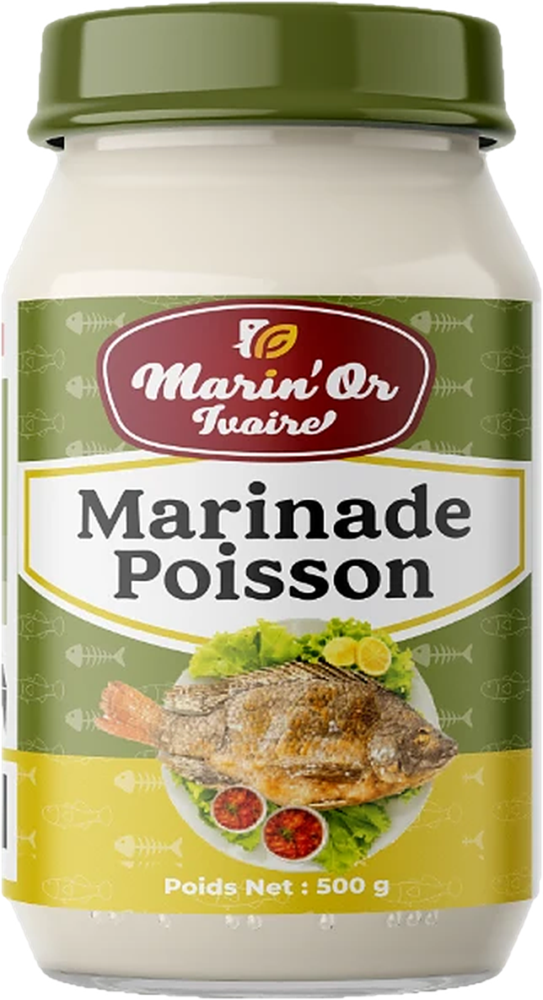
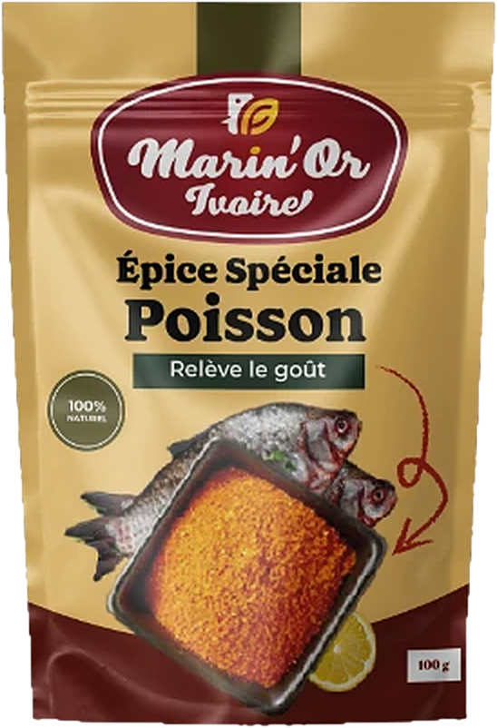

<template>
  <style>
    @font-face{font-family:"Cream Heavy";src:url("../assets/fonts/Cream-Heavy.ttf") format("truetype");font-weight:900;}
    @font-face{font-family:"Montserrat";src:url("../assets/fonts/Montserrat-latin.woff2") format("woff2");font-weight:100 900;unicode-range:U+0000-00FF,U+0131,U+0152-0153,U+02BB-02BC,U+02C6,U+02DA,U+02DC,U+0304,U+0308,U+0329,U+2000-206F,U+20AC,U+2122,U+2191,U+2193,U+2212,U+2215,U+FEFF,U+FFFD;}
    @font-face{font-family:"Montserrat";src:url("../assets/fonts/Montserrat-latin-ext.woff2") format("woff2");font-weight:100 900;unicode-range:U+0100-02BA,U+02BD-02C5,U+02C7-02CC,U+02CE-02D7,U+02DD-02FF,U+0304,U+0308,U+0329,U+1D00-1DBF,U+1E00-1E9F,U+1EF2-1EFF,U+2020,U+20A0-20AB,U+20AD-20C0,U+2113,U+2C60-2C7F,U+A720-A7FF;}

    #root {
      position: absolute;
      inset: 0;
      width: 1920px;
      height: 1080px;
      overflow: hidden;
      font-family: "Montserrat";
    }
    .pt-stage {
      position: absolute;
      inset: 0;
      overflow: hidden;
      background: #ffecd1;
    }
    .pt-world {
      position: absolute;
      left: 0;
      top: 0;
      width: 1920px;
      height: 1080px;
      transform-origin: 0 0;
    }
    .pt-svg {
      position: absolute;
      left: 0;
      top: 0;
      width: 1920px;
      height: 1080px;
      overflow: visible;
    }
    .pt-macro {
      position: absolute;
      left: 0;
      top: 100px;
      width: 1920px;
      height: 1080px;
      transform-origin: 960px 540px;
    }
    .pt-jar {
      position: absolute;
      left: 150px;
      top: 405px;
      width: 284px;
      height: 522px;
      transform-origin: 50% 100%;
    }
    .pt-jar img,
    .pt-sachet img {
      display: block;
      width: 100%;
      height: 100%;
    }
    .pt-sachet {
      position: absolute;
      left: 1527px;
      top: 420px;
      width: 246px;
      height: 360px;
      transform-origin: 50% 50%;
      filter: drop-shadow(0 22px 26px rgba(42, 8, 14, 0.32));
    }
    .pt-chip {
      position: absolute;
      left: 130px;
      top: 100px;
      height: 70px;
      display: flex;
      align-items: center;
      gap: 14px;
      padding: 0 38px 0 28px;
      border-radius: 999px;
      background: radial-gradient(circle at 50% 50%, #a40c21 0%, #7b1421 100%);
      box-shadow:
        inset 0 0 0 3px #ffffff,
        0 14px 28px rgba(42, 8, 14, 0.38);
      color: #ffffff;
      font-family: "Montserrat";
      font-weight: 700;
      font-size: 30px;
      line-height: 1;
      letter-spacing: 0.04em;
      white-space: nowrap;
      transform-origin: 0% 50%;
    }
    .pt-chip-dot {
      width: 16px;
      height: 16px;
      border-radius: 50%;
      background: linear-gradient(90deg, #f9a825 0%, #fbd021 85%);
      box-shadow: 0 0 10px rgba(251, 208, 33, 0.85);
      flex: 0 0 auto;
    }
    .pt-band-wrap {
      position: absolute;
      inset: 0;
      overflow: hidden;
    }
    .pt-band {
      position: absolute;
      left: 0;
      top: 0;
      width: 1920px;
      height: 222px;
      background: #ffecd1;
      box-shadow: 0 14px 34px rgba(42, 8, 14, 0.2);
    }
    .pt-band-rule {
      position: absolute;
      left: 0;
      bottom: 0;
      width: 1920px;
      height: 4px;
      background: linear-gradient(90deg, #f9a825 0%, #fbd021 85%);
    }
    .pt-title {
      position: absolute;
      left: 0;
      top: 82px;
      width: 1920px;
      text-align: center;
      font-family: "Cream Heavy";
      font-weight: 900;
      font-size: 88px;
      line-height: 1;
      color: #7b1421;
      white-space: nowrap;
    }
    .pt-word {
      display: inline-block;
      margin: 0 0.12em;
    }
    .pt-cover {
      position: absolute;
      inset: 0;
    }
    .pt-in {
      background: #ffecd1;
    }
    .pt-out {
      background: #7b1421;
      opacity: 0;
    }
  </style>

  <div id="root" data-composition-id="06-partage" data-start="0" data-duration="4" data-width="1920" data-height="1080">
    <!-- ================= STAGE: one world (family table, final layout) under one camera ================= -->
    <div id="f06-partage-stage" class="clip pt-stage" data-start="0" data-duration="4" data-track-index="0">
      <div class="pt-world" id="partage-world">
        <!-- ---------- the table, seen from above (world space = final framing) ---------- -->
        <svg class="pt-svg" viewBox="0 0 1920 1080" width="1920" height="1080" aria-hidden="true">
          <defs>
            <radialGradient id="partage-floor" cx="0.5" cy="0.55" r="0.75">
              <stop offset="0" stop-color="#FFF4E4" />
              <stop offset="0.6" stop-color="#FFECD1" />
              <stop offset="1" stop-color="#F2D2AC" />
            </radialGradient>
            <radialGradient id="partage-cloth" cx="0.44" cy="0.4" r="0.62">
              <stop offset="0" stop-color="#FDF6F7" />
              <stop offset="0.65" stop-color="#F6E8EA" />
              <stop offset="1" stop-color="#E8CDD3" />
            </radialGradient>
            <pattern id="partage-motif" x="0" y="0" width="64" height="64" patternUnits="userSpaceOnUse">
              <path d="M32 24 L36 32 L32 40 L28 32Z" fill="#7B1421" opacity="0.16" />
              <circle cx="0" cy="0" r="2.6" fill="#7B1421" opacity="0.14" />
              <circle cx="64" cy="0" r="2.6" fill="#7B1421" opacity="0.14" />
              <circle cx="0" cy="64" r="2.6" fill="#7B1421" opacity="0.14" />
              <circle cx="64" cy="64" r="2.6" fill="#7B1421" opacity="0.14" />
            </pattern>
            <radialGradient id="partage-rim" cx="0.38" cy="0.32" r="0.75">
              <stop offset="0" stop-color="#B8242F" />
              <stop offset="0.55" stop-color="#7B1421" />
              <stop offset="1" stop-color="#560C17" />
            </radialGradient>
            <radialGradient id="partage-plate-in" cx="0.42" cy="0.38" r="0.65">
              <stop offset="0" stop-color="#FFFFFF" />
              <stop offset="0.75" stop-color="#FBF5F2" />
              <stop offset="1" stop-color="#E9D7D4" />
            </radialGradient>
            <radialGradient id="partage-attieke" cx="0.38" cy="0.34" r="0.7">
              <stop offset="0" stop-color="#FFF9E6" />
              <stop offset="0.5" stop-color="#F5E1B2" />
              <stop offset="1" stop-color="#D6B67C" />
            </radialGradient>
            <radialGradient id="partage-alloco" cx="0.4" cy="0.36" r="0.66">
              <stop offset="0" stop-color="#FFCF4E" />
              <stop offset="0.5" stop-color="#F49A26" />
              <stop offset="1" stop-color="#C85A16" />
            </radialGradient>
            <linearGradient id="partage-chili" x1="0" y1="0" x2="0" y2="1">
              <stop offset="0" stop-color="#F0444A" />
              <stop offset="0.55" stop-color="#C4161F" />
              <stop offset="1" stop-color="#7E0814" />
            </linearGradient>
            <radialGradient id="partage-bissap" cx="0.4" cy="0.38" r="0.65">
              <stop offset="0" stop-color="#C21A3A" />
              <stop offset="0.7" stop-color="#8A0C24" />
              <stop offset="1" stop-color="#5A0616" />
            </radialGradient>
            <radialGradient id="partage-ginger" cx="0.4" cy="0.38" r="0.65">
              <stop offset="0" stop-color="#FFE48A" />
              <stop offset="0.7" stop-color="#F6C24A" />
              <stop offset="1" stop-color="#D99A26" />
            </radialGradient>
            <radialGradient id="partage-sauce" cx="0.42" cy="0.38" r="0.65">
              <stop offset="0" stop-color="#F06A30" />
              <stop offset="0.6" stop-color="#C8301A" />
              <stop offset="1" stop-color="#7A140C" />
            </radialGradient>
            <radialGradient id="partage-bowl" cx="0.4" cy="0.36" r="0.66">
              <stop offset="0" stop-color="#B8242F" />
              <stop offset="1" stop-color="#5A0C16" />
            </radialGradient>
            <filter id="partage-blur6" x="-50%" y="-50%" width="200%" height="200%"><feGaussianBlur stdDeviation="6" /></filter>
            <filter id="partage-blur18" x="-50%" y="-50%" width="200%" height="200%"><feGaussianBlur stdDeviation="18" /></filter>

            <!-- braised tilapia (same hero fish as scene 03) -->
            <linearGradient id="partage-fish-body" x1="0" y1="0" x2="0" y2="1">
              <stop offset="0" stop-color="#6A2A0E" />
              <stop offset="0.26" stop-color="#A4521E" />
              <stop offset="0.55" stop-color="#D88C3E" />
              <stop offset="0.82" stop-color="#F2BE6C" />
              <stop offset="1" stop-color="#DE9C4C" />
            </linearGradient>
            <linearGradient id="partage-fish-fin" x1="0" y1="0" x2="1" y2="1">
              <stop offset="0" stop-color="#A24E1C" />
              <stop offset="1" stop-color="#5A200A" />
            </linearGradient>
            <clipPath id="partage-cfish-clip">
              <path d="M-172 4 C-150 -40 -96 -84 -10 -98 C70 -110 150 -94 206 -64 C238 -46 262 -22 270 2 C274 14 268 24 258 30 C236 62 190 86 120 98 C40 110 -60 100 -120 66 C-146 50 -164 30 -172 4Z" />
            </clipPath>
            <g id="partage-cfish">
              <path d="M-160 -14 C-194 -46 -228 -78 -262 -100 C-278 -62 -282 -22 -270 6 C-282 40 -278 82 -258 112 C-224 86 -194 52 -160 22Z" fill="url(#partage-fish-fin)" />
              <path d="M-140 -50 C-128 -98 -60 -134 40 -132 C110 -130 162 -106 182 -72 C122 -96 30 -108 -40 -98 C-90 -90 -122 -72 -140 -50Z" fill="url(#partage-fish-fin)" />
              <path d="M-118 64 C-112 102 -70 126 -20 122 C-10 114 -6 106 -4 98 C-50 100 -90 88 -118 64Z" fill="url(#partage-fish-fin)" />
              <path d="M-172 4 C-150 -40 -96 -84 -10 -98 C70 -110 150 -94 206 -64 C238 -46 262 -22 270 2 C274 14 268 24 258 30 C236 62 190 86 120 98 C40 110 -60 100 -120 66 C-146 50 -164 30 -172 4Z" fill="url(#partage-fish-body)" />
              <g clip-path="url(#partage-cfish-clip)">
                <g stroke="#3A1206" stroke-width="14" stroke-linecap="round" opacity="0.34">
                  <path d="M-120 -120 L-170 130" /><path d="M-40 -120 L-90 130" /><path d="M40 -120 L-10 130" /><path d="M120 -120 L70 130" />
                </g>
                <path d="M-30 -70 Q-16 -30 -26 18" stroke="#8A2A10" stroke-width="12" fill="none" stroke-linecap="round" opacity="0.8" />
                <path d="M60 -76 Q74 -34 64 16" stroke="#8A2A10" stroke-width="12" fill="none" stroke-linecap="round" opacity="0.8" />
                <ellipse cx="60" cy="-58" rx="140" ry="12" fill="#FFF4DC" opacity="0.26" />
              </g>
              <path d="M168 -78 C198 -40 202 28 172 86" stroke="#5A220A" stroke-width="6" fill="none" stroke-linecap="round" opacity="0.6" />
              <path d="M150 10 C120 18 96 38 86 60 C112 56 138 44 158 26Z" fill="url(#partage-fish-fin)" />
              <circle cx="216" cy="-26" r="15" fill="#7A3414" opacity="0.55" />
              <circle cx="216" cy="-26" r="11.5" fill="#EFE2CC" />
              <circle cx="217" cy="-25" r="5" fill="#B49A82" />
            </g>
          </defs>

          <!-- floor + table -->
          <rect x="-200" y="-200" width="2320" height="1480" fill="url(#partage-floor)" />
          <circle cx="986" cy="676" r="500" fill="#2A080E" opacity="0.28" filter="url(#partage-blur18)" />
          <circle cx="960" cy="640" r="490" fill="url(#partage-cloth)" />
          <circle cx="960" cy="640" r="440" fill="url(#partage-motif)" />
          <circle cx="960" cy="640" r="476" fill="none" stroke="#7B1421" stroke-width="2.5" opacity="0.38" />
          <circle cx="960" cy="640" r="446" fill="none" stroke="#7B1421" stroke-width="2" opacity="0.32" />
          <g id="partage-border"></g>
          <circle cx="960" cy="640" r="489" fill="none" stroke="#D9B3BC" stroke-width="3" />

          <!-- glasses on the table -->
          <g id="partage-glasses"></g>
          <!-- side plates -->
          <g id="partage-plates"></g>
          <!-- small bowls -->
          <g>
            <circle cx="836" cy="420" r="50" fill="#2A080E" opacity="0.22" filter="url(#partage-blur6)" />
            <circle cx="830" cy="414" r="48" fill="url(#partage-bowl)" />
            <circle cx="830" cy="414" r="37" fill="url(#partage-sauce)" />
            <ellipse cx="818" cy="402" rx="12" ry="6" fill="#FFFFFF" opacity="0.5" />
            <circle cx="1096" cy="420" r="50" fill="#2A080E" opacity="0.22" filter="url(#partage-blur6)" />
            <circle cx="1090" cy="414" r="48" fill="url(#partage-bowl)" />
            <circle cx="1090" cy="414" r="37" fill="#FBF5F2" />
            <g id="partage-bowl-alloco"></g>
          </g>

          <!-- central platter : bordeaux rim (stays) + inner group (iris closes at the end) -->
          <circle cx="972" cy="656" r="204" fill="#2A080E" opacity="0.3" filter="url(#partage-blur6)" />
          <circle cx="960" cy="640" r="200" fill="url(#partage-rim)" />
          <path d="M795 560 A186 186 0 0 1 900 462" stroke="#F08A96" stroke-width="5" fill="none" opacity="0.5" stroke-linecap="round" />
          <g id="partage-platter-in">
            <circle cx="960" cy="640" r="166" fill="url(#partage-plate-in)" />
            <circle cx="960" cy="640" r="170" fill="none" stroke="#F9A825" stroke-width="3.5" />
            <!-- attiéké -->
            <path d="M832 600 C828 548 872 516 922 520 C972 524 996 564 990 608 C984 652 942 672 894 666 C852 660 834 638 832 600Z" fill="#5A2A1A" opacity="0.18" transform="translate(6 8)" />
            <path d="M832 600 C828 548 872 516 922 520 C972 524 996 564 990 608 C984 652 942 672 894 666 C852 660 834 638 832 600Z" fill="url(#partage-attieke)" />
            <g id="partage-grains"></g>
            <!-- tomato + onion -->
            <circle cx="836" cy="690" r="23" fill="#E0402E" />
            <circle cx="836" cy="690" r="16" fill="#F57A5A" />
            <path d="M836 675 L836 705 M821 690 L851 690" stroke="#E0402E" stroke-width="3" />
            <circle cx="858" cy="728" r="21" fill="#E0402E" />
            <circle cx="858" cy="728" r="14" fill="#F57A5A" />
            <path d="M858 715 L858 741 M845 728 L871 728" stroke="#E0402E" stroke-width="3" />
            <!-- chilis -->
            <path d="M888 778 C914 762 958 764 984 774 C992 778 990 784 982 786 C952 792 916 792 888 778Z" fill="url(#partage-chili)" />
            <path d="M982 778 C994 774 1002 766 1008 756" stroke="#376F23" stroke-width="6" stroke-linecap="round" fill="none" />
            <path d="M906 774 C930 768 956 768 974 772" stroke="#FFFFFF" stroke-width="2.5" stroke-linecap="round" opacity="0.6" fill="none" />
            <!-- fish -->
            <ellipse cx="1016" cy="704" rx="120" ry="40" fill="#4A1A08" opacity="0.22" transform="rotate(-14 1016 704)" filter="url(#partage-blur6)" />
            <use href="#partage-cfish" transform="translate(1012 694) rotate(-14) scale(0.46 0.52)" />
            <ellipse cx="1004" cy="688" rx="22" ry="14" fill="none" stroke="#F8ECF2" stroke-width="5" transform="rotate(-14 1004 688)" />
            <ellipse cx="1004" cy="688" rx="16" ry="9" fill="none" stroke="#C783A6" stroke-width="2" transform="rotate(-14 1004 688)" />
            <!-- alloco -->
            <g id="partage-platter-alloco"></g>
          </g>
        </svg>

        <!-- ---------- the macro gesture, living at the centre of the platter (scale 0.28) ---------- -->
        <div class="pt-macro" id="partage-macro">
          <svg class="pt-svg" viewBox="0 0 1920 1080" width="1920" height="1080" aria-hidden="true">
            <defs>
              <linearGradient id="partage-mwall" x1="0" y1="0" x2="0" y2="1">
                <stop offset="0" stop-color="#FFF6E8" />
                <stop offset="1" stop-color="#FBE0BC" />
              </linearGradient>
              <linearGradient id="partage-mtop" x1="0" y1="0" x2="0" y2="1">
                <stop offset="0" stop-color="#F3D8B0" />
                <stop offset="0.4" stop-color="#F6DFBC" />
                <stop offset="1" stop-color="#E9C28E" />
              </linearGradient>
              <linearGradient id="partage-board" x1="0" y1="0" x2="0.3" y2="1">
                <stop offset="0" stop-color="#EECB98" />
                <stop offset="0.6" stop-color="#DDAA6E" />
                <stop offset="1" stop-color="#CD955A" />
              </linearGradient>
              <linearGradient id="partage-board-edge" x1="0" y1="0" x2="0" y2="1">
                <stop offset="0" stop-color="#B57A44" />
                <stop offset="1" stop-color="#8A5428" />
              </linearGradient>
              <!-- raw tilapia -->
              <linearGradient id="partage-raw-body" x1="0" y1="0" x2="0" y2="1">
                <stop offset="0" stop-color="#4E3C4A" />
                <stop offset="0.28" stop-color="#7E6A7A" />
                <stop offset="0.6" stop-color="#B8A6B2" />
                <stop offset="0.85" stop-color="#E6DADF" />
                <stop offset="1" stop-color="#D8C8CF" />
              </linearGradient>
              <linearGradient id="partage-raw-fin" x1="0" y1="0" x2="1" y2="1">
                <stop offset="0" stop-color="#8E7684" />
                <stop offset="1" stop-color="#4E3A46" />
              </linearGradient>
              <clipPath id="partage-rfish-clip">
                <path d="M-172 4 C-150 -40 -96 -84 -10 -98 C70 -110 150 -94 206 -64 C238 -46 262 -22 270 2 C274 14 268 24 258 30 C236 62 190 86 120 98 C40 110 -60 100 -120 66 C-146 50 -164 30 -172 4Z" />
              </clipPath>
              <linearGradient id="partage-iron" x1="0" y1="0" x2="1" y2="0">
                <stop offset="0" stop-color="#5E222A" />
                <stop offset="0.18" stop-color="#3E121A" />
                <stop offset="0.6" stop-color="#20070D" />
                <stop offset="1" stop-color="#3A1216" />
              </linearGradient>
              <linearGradient id="partage-lip" x1="0" y1="0" x2="1" y2="1">
                <stop offset="0" stop-color="#7A3038" />
                <stop offset="0.5" stop-color="#3A1016" />
                <stop offset="1" stop-color="#1E060A" />
              </linearGradient>
              <radialGradient id="partage-msauce" cx="0.42" cy="0.4" r="0.65">
                <stop offset="0" stop-color="#F5873A" />
                <stop offset="0.45" stop-color="#DC4C20" />
                <stop offset="0.8" stop-color="#AE2C14" />
                <stop offset="1" stop-color="#6E160C" />
              </radialGradient>
              <radialGradient id="partage-dust" cx="0.5" cy="0.5" r="0.5">
                <stop offset="0" stop-color="#FBD021" stop-opacity="0.95" />
                <stop offset="0.5" stop-color="#F9A825" stop-opacity="0.6" />
                <stop offset="1" stop-color="#F9A825" stop-opacity="0" />
              </radialGradient>
              <linearGradient id="partage-bristle" x1="0" y1="0" x2="0" y2="1">
                <stop offset="0" stop-color="#FFF3DC" />
                <stop offset="0.55" stop-color="#F6DDB0" />
                <stop offset="0.75" stop-color="#E8662A" />
                <stop offset="1" stop-color="#C83A1A" />
              </linearGradient>
              <linearGradient id="partage-ferrule" x1="0" y1="0" x2="1" y2="0">
                <stop offset="0" stop-color="#FFE28A" />
                <stop offset="0.5" stop-color="#F9A825" />
                <stop offset="1" stop-color="#B5761C" />
              </linearGradient>
              <linearGradient id="partage-handle" x1="0" y1="0" x2="1" y2="0">
                <stop offset="0" stop-color="#B5242F" />
                <stop offset="0.45" stop-color="#7B1421" />
                <stop offset="1" stop-color="#4A0A12" />
              </linearGradient>
              <linearGradient id="partage-marinade-g" x1="0" y1="0" x2="0" y2="1">
                <stop offset="0" stop-color="#C0301A" />
                <stop offset="0.35" stop-color="#E4532A" />
                <stop offset="0.7" stop-color="#F07A34" />
                <stop offset="1" stop-color="#D0441E" />
              </linearGradient>
              <mask id="partage-mar-mask" maskUnits="userSpaceOnUse" x="-320" y="-180" width="640" height="360">
                <g id="partage-marinade" fill="none" stroke="#FFFFFF" stroke-linecap="round"></g>
              </mask>
              <filter id="partage-mblur" x="-50%" y="-50%" width="200%" height="200%"><feGaussianBlur stdDeviation="22" /></filter>
              <filter id="partage-mblur6" x="-50%" y="-50%" width="200%" height="200%"><feGaussianBlur stdDeviation="6" /></filter>
              <filter id="partage-pblur" x="-50%" y="-10%" width="200%" height="120%"><feGaussianBlur stdDeviation="2.5" /></filter>
              <filter id="partage-msoft" x="-60%" y="-60%" width="220%" height="220%"><feGaussianBlur stdDeviation="10" /></filter>
            </defs>

            <!-- soft out-of-focus kitchen + light worktop -->
            <rect x="-420" y="-820" width="2760" height="1300" fill="url(#partage-mwall)" />
            <g filter="url(#partage-mblur)" opacity="0.9">
              <circle cx="520" cy="150" r="90" fill="#FFFFFF" opacity="0.55" />
              <circle cx="900" cy="90" r="60" fill="#FBD021" opacity="0.28" />
              <circle cx="1240" cy="190" r="110" fill="#FFFFFF" opacity="0.5" />
              <circle cx="1620" cy="110" r="70" fill="#F9A825" opacity="0.26" />
              <circle cx="180" cy="300" r="80" fill="#F9A825" opacity="0.2" />
              <rect x="-420" y="360" width="2760" height="80" fill="#E9C28E" opacity="0.5" />
            </g>
            <rect x="-420" y="470" width="2760" height="1420" fill="url(#partage-mtop)" />
            <rect x="-420" y="462" width="2760" height="16" fill="#C9935C" opacity="0.25" filter="url(#partage-mblur6)" />
            <g id="partage-mgrain"></g>

            <!-- jar contact shadow (the jar itself is an  layer above) -->
            <ellipse cx="292" cy="924" rx="176" ry="26" fill="#2A080E" opacity="0.35" filter="url(#partage-mblur6)" />

            <!-- cutting board -->
            <ellipse cx="950" cy="934" rx="480" ry="34" fill="#2A080E" opacity="0.28" filter="url(#partage-mblur6)" />
            <path d="M528 896 L1372 896 L1372 912 Q1372 934 1348 934 L552 934 Q528 934 528 912Z" fill="url(#partage-board-edge)" />
            <path d="M600 600 L1296 600 Q1318 600 1322 620 L1370 878 Q1374 900 1350 900 L548 900 Q524 900 528 878 L576 620 Q580 600 600 600Z" fill="url(#partage-board)" />
            <g id="partage-board-grain"></g>
            <path d="M600 602 L1296 602" stroke="#FFF2DA" stroke-width="3" opacity="0.8" />

            <!-- raw tilapia + marinade strokes (same frame) -->
            <ellipse cx="950" cy="806" rx="330" ry="40" fill="#5A2A1A" opacity="0.22" filter="url(#partage-mblur6)" />
            <g transform="translate(950 742) rotate(-3) scale(1.12 0.82)">
              <path d="M-160 -14 C-194 -46 -228 -78 -262 -100 C-278 -62 -282 -22 -270 6 C-282 40 -278 82 -258 112 C-224 86 -194 52 -160 22Z" fill="url(#partage-raw-fin)" />
              <path d="M-176 -6 L-252 -78 M-178 4 L-262 2 M-176 14 L-250 88" stroke="#C9B6C0" stroke-width="3" stroke-linecap="round" opacity="0.5" fill="none" />
              <path d="M-140 -50 C-128 -98 -60 -134 40 -132 C110 -130 162 -106 182 -72 C122 -96 30 -108 -40 -98 C-90 -90 -122 -72 -140 -50Z" fill="url(#partage-raw-fin)" />
              <path d="M-110 -70 L-96 -112 M-70 -86 L-56 -126 M-30 -96 L-16 -132 M10 -102 L24 -134 M50 -104 L66 -132 M90 -100 L108 -124" stroke="#C9B6C0" stroke-width="3" stroke-linecap="round" opacity="0.45" fill="none" />
              <path d="M-118 64 C-112 102 -70 126 -20 122 C-10 114 -6 106 -4 98 C-50 100 -90 88 -118 64Z" fill="url(#partage-raw-fin)" />
              <path d="M84 94 C72 124 46 142 18 146 C34 126 50 108 62 98Z" fill="url(#partage-raw-fin)" />
              <path d="M-172 4 C-150 -40 -96 -84 -10 -98 C70 -110 150 -94 206 -64 C238 -46 262 -22 270 2 C274 14 268 24 258 30 C236 62 190 86 120 98 C40 110 -60 100 -120 66 C-146 50 -164 30 -172 4Z" fill="url(#partage-raw-body)" />
              <g clip-path="url(#partage-rfish-clip)">
                <g stroke="#4E3C4A" stroke-width="18" opacity="0.14" stroke-linecap="round">
                  <path d="M-110 -110 L-130 110" /><path d="M-50 -110 L-70 110" /><path d="M10 -110 L-10 110" /><path d="M70 -110 L50 110" /><path d="M130 -110 L110 110" />
                </g>
                <path d="M-30 -74 Q-16 -30 -26 18" stroke="#E7A9B0" stroke-width="9" fill="none" stroke-linecap="round" />
                <path d="M60 -80 Q74 -36 64 14" stroke="#E7A9B0" stroke-width="9" fill="none" stroke-linecap="round" />
                <ellipse cx="40" cy="-60" rx="150" ry="12" fill="#FFFFFF" opacity="0.45" filter="url(#partage-mblur6)" />
                <ellipse cx="20" cy="62" rx="140" ry="12" fill="#FFFFFF" opacity="0.35" filter="url(#partage-mblur6)" />
                <!-- marinade coat, revealed by three brush strokes (mask = svg-path-draw) -->
                <g mask="url(#partage-mar-mask)">
                  <rect x="-290" y="-150" width="580" height="300" fill="url(#partage-marinade-g)" />
                  <g id="partage-mar-flecks"></g>
                  <path d="M-150 -58 Q40 -92 236 -40" stroke="#FFD2A0" stroke-width="10" fill="none" stroke-linecap="round" opacity="0.55" filter="url(#partage-mblur6)" />
                  <path d="M-120 20 Q40 4 200 14" stroke="#FFC98E" stroke-width="7" fill="none" stroke-linecap="round" opacity="0.45" filter="url(#partage-mblur6)" />
                  <ellipse cx="60" cy="-70" rx="120" ry="9" fill="#FFFFFF" opacity="0.55" filter="url(#partage-mblur6)" />
                </g>
              </g>
              <path d="M168 -78 C198 -40 202 28 172 86" stroke="#4E3A46" stroke-width="6" fill="none" stroke-linecap="round" opacity="0.55" />
              <path d="M150 10 C120 18 96 38 86 60 C112 56 138 44 158 26Z" fill="url(#partage-raw-fin)" opacity="0.9" />
              <circle cx="216" cy="-26" r="17" fill="#F4EEF2" />
              <circle cx="216" cy="-26" r="17" fill="none" stroke="#6E5A66" stroke-width="3" />
              <circle cx="217" cy="-25" r="9" fill="#1E0C14" />
              <circle cx="212" cy="-31" r="4" fill="#FFFFFF" />
              <path d="M266 4 C277 10 275 23 262 27" stroke="#4E3A46" stroke-width="4" fill="none" stroke-linecap="round" />
            </g>

            <!-- foreground pot (marmite) receiving the spice -->
            <ellipse cx="1510" cy="1318" rx="330" ry="34" fill="#2A080E" opacity="0.3" filter="url(#partage-mblur6)" />
            <path d="M1200 958 C1186 1110 1270 1300 1500 1306 C1730 1300 1814 1110 1800 958Z" fill="url(#partage-iron)" />
            <ellipse cx="1262" cy="1030" rx="16" ry="54" fill="#FFFFFF" opacity="0.35" filter="url(#partage-mblur6)" />
            <ellipse cx="1500" cy="950" rx="302" ry="78" fill="url(#partage-lip)" />
            <ellipse cx="1500" cy="954" rx="272" ry="64" fill="#12040A" />
            <ellipse cx="1500" cy="964" rx="258" ry="54" fill="url(#partage-msauce)" />
            <ellipse cx="1440" cy="956" rx="70" ry="6" fill="#FBD021" opacity="0.3" />
            <ellipse id="partage-dustpile" cx="1440" cy="962" rx="110" ry="28" fill="url(#partage-dust)" opacity="0" />
            <g id="partage-steam" filter="url(#partage-msoft)"></g>
            <path id="partage-stream" d="M0 0" fill="none" stroke="#F9A825" stroke-width="12" stroke-linecap="round" opacity="0" filter="url(#partage-pblur)" />
            <g id="partage-particles"></g>
            <path d="M1198 950 A302 78 0 0 0 1802 950" stroke="url(#partage-lip)" stroke-width="16" fill="none" />
            <path d="M1220 962 A282 70 0 0 0 1500 1026" stroke="#A86A70" stroke-width="3" fill="none" opacity="0.45" />

            <!-- pastry brush -->
            <g id="partage-brush" transform="translate(1700 -300) rotate(35)">
              <rect x="-14" y="-340" width="28" height="240" rx="14" fill="url(#partage-handle)" />
              <rect x="-8" y="-330" width="6" height="210" rx="3" fill="#FFFFFF" opacity="0.35" />
              <circle cx="0" cy="-318" r="5" fill="#2A080E" opacity="0.6" />
              <rect x="-24" y="-108" width="48" height="36" rx="5" fill="url(#partage-ferrule)" />
              <rect x="-24" y="-96" width="48" height="4" fill="#B5761C" opacity="0.7" />
              <path d="M-24 -74 Q-28 -36 -22 -2 Q0 8 22 -2 Q28 -36 24 -74Z" fill="url(#partage-bristle)" />
              <path d="M-12 -72 L-12 -6 M0 -72 L0 0 M12 -72 L12 -6" stroke="#D9B98A" stroke-width="2" opacity="0.6" />
            </g>
          </svg>

          <div class="pt-jar" id="f06-partage-jar"></div>
          <div class="pt-sachet" id="f06-partage-sachet"></div>
          <div class="pt-chip" id="f06-partage-chip"><span class="pt-chip-dot"></span>Simple à utiliser</div>
        </div>

        <!-- ---------- arms of family & friends (world space, above everything) ---------- -->
        <svg class="pt-svg" viewBox="0 0 1920 1080" width="1920" height="1080" aria-hidden="true">
          <defs>
            <filter id="partage-armshadow" x="-20%" y="-20%" width="140%" height="140%">
              <feDropShadow dx="10" dy="16" stdDeviation="10" flood-color="#2A080E" flood-opacity="0.3" />
            </filter>
            <linearGradient id="partage-sleeve-shade" x1="0" y1="0" x2="0" y2="1">
              <stop offset="0" stop-color="#FFFFFF" stop-opacity="0.34" />
              <stop offset="0.42" stop-color="#FFFFFF" stop-opacity="0" />
              <stop offset="0.7" stop-color="#2A080E" stop-opacity="0.05" />
              <stop offset="1" stop-color="#2A080E" stop-opacity="0.42" />
            </linearGradient>
            <linearGradient id="partage-skin1" x1="0" y1="0" x2="0" y2="1">
              <stop offset="0" stop-color="#8A5434" /><stop offset="0.5" stop-color="#6B3A22" /><stop offset="1" stop-color="#4E2814" />
            </linearGradient>
            <linearGradient id="partage-skin2" x1="0" y1="0" x2="0" y2="1">
              <stop offset="0" stop-color="#AE6A44" /><stop offset="0.5" stop-color="#8A4B2A" /><stop offset="1" stop-color="#6A3418" />
            </linearGradient>
            <linearGradient id="partage-skin3" x1="0" y1="0" x2="0" y2="1">
              <stop offset="0" stop-color="#C47E52" /><stop offset="0.5" stop-color="#A0603A" /><stop offset="1" stop-color="#7A4422" />
            </linearGradient>
            <linearGradient id="partage-silver" x1="0" y1="0" x2="0" y2="1">
              <stop offset="0" stop-color="#FBF2F3" /><stop offset="0.5" stop-color="#D6C2C6" /><stop offset="1" stop-color="#9C8288" />
            </linearGradient>
            <!-- wax-print sleeves -->
            <pattern id="partage-wax1" width="30" height="30" patternUnits="userSpaceOnUse">
              <rect width="30" height="30" fill="#7B1421" /><circle cx="15" cy="15" r="5" fill="#F9A825" /><circle cx="0" cy="0" r="2.5" fill="#FBD021" /><circle cx="30" cy="0" r="2.5" fill="#FBD021" /><circle cx="0" cy="30" r="2.5" fill="#FBD021" /><circle cx="30" cy="30" r="2.5" fill="#FBD021" />
            </pattern>
            <pattern id="partage-wax2" width="34" height="22" patternUnits="userSpaceOnUse">
              <rect width="34" height="22" fill="#376F23" /><path d="M0 16 L8.5 6 L17 16 L25.5 6 L34 16" stroke="#FFECD1" stroke-width="3" fill="none" />
            </pattern>
            <pattern id="partage-wax3" width="26" height="26" patternUnits="userSpaceOnUse">
              <rect width="26" height="26" fill="#F9A825" /><rect x="0" y="0" width="8" height="26" fill="#7B1421" /><rect x="13" y="0" width="2.5" height="26" fill="#A40C21" />
            </pattern>
            <pattern id="partage-wax4" width="30" height="30" patternUnits="userSpaceOnUse">
              <rect width="30" height="30" fill="#EFCBD3" /><path d="M15 7 L22 15 L15 23 L8 15Z" fill="#7B1421" opacity="0.75" />
            </pattern>
            <pattern id="partage-wax5" width="28" height="28" patternUnits="userSpaceOnUse">
              <rect width="28" height="28" fill="#FFECD1" /><rect x="0" y="0" width="6" height="28" fill="#2A5519" /><rect x="11" y="0" width="3" height="28" fill="#A40C21" />
            </pattern>
            <pattern id="partage-wax6" width="26" height="26" patternUnits="userSpaceOnUse">
              <rect width="26" height="26" fill="#A40C21" /><circle cx="13" cy="13" r="4.5" fill="#FFECD1" /><circle cx="0" cy="0" r="2.2" fill="#FBD021" /><circle cx="26" cy="26" r="2.2" fill="#FBD021" /><circle cx="26" cy="0" r="2.2" fill="#FBD021" /><circle cx="0" cy="26" r="2.2" fill="#FBD021" />
            </pattern>
          </defs>
          <g id="partage-arms" filter="url(#partage-armshadow)"></g>
          <g id="partage-spark"></g>
        </svg>
      </div>
    </div>

    <!-- ================= title band (Scene 5) ================= -->
    <div id="f06-partage-band" class="clip pt-band-wrap" data-start="0" data-duration="4" data-track-index="1">
      <div class="pt-band" id="partage-band">
        <div class="pt-title" id="f06-partage-title"><span class="pt-word">À</span><span class="pt-word">déguster</span><span class="pt-word">en</span><span class="pt-word">famille</span><span class="pt-word">et</span><span class="pt-word">entre</span><span class="pt-word">amis</span></div>
        <div class="pt-band-rule"></div>
      </div>
    </div>

    <!-- ================= seams ================= -->
    <div id="f06-partage-seam-in" class="clip pt-cover pt-in" data-start="0" data-duration="0.5" data-track-index="2"></div>
    <div id="f06-partage-seam-out" class="clip pt-cover pt-out" data-start="3.5" data-duration="0.5" data-track-index="3"></div>
  </div>

  <script src="../assets/vendor/gsap.min.js"></script>
  <script>
    (function () {
      var DUR = 4;
      var NS = "http://www.w3.org/2000/svg";
      var byId = function (id) {
        return document.getElementById(id);
      };
      var mk = function (tag, attrs, parent) {
        var e = document.createElementNS(NS, tag);
        for (var k in attrs) e.setAttribute(k, attrs[k]);
        if (parent) parent.appendChild(e);
        return e;
      };
      var prand = function (n) {
        var x = Math.sin(n * 127.1 + 311.7) * 43758.5453;
        return x - Math.floor(x);
      };
      var frac = function (x) {
        return x - Math.floor(x);
      };
      var lerp = function (a, b, t) {
        return a + (b - a) * t;
      };
      var clamp01 = function (v) {
        return v < 0 ? 0 : v > 1 ? 1 : v;
      };
      var r2 = function (v) {
        return Math.round(v * 100) / 100;
      };
      var DEG = Math.PI / 180;

      /* ================= static generated detail ================= */
      // tablecloth border: bordeaux diamonds + gold dots
      var border = byId("partage-border");
      for (var i = 0; i < 64; i++) {
        var a = (i / 64) * Math.PI * 2;
        var bx = 960 + Math.cos(a) * 461, by = 640 + Math.sin(a) * 461;
        mk("path", { d: "M0 -8 L6 0 L0 8 L-6 0Z", fill: "#7B1421", opacity: 0.55, transform: "translate(" + r2(bx) + " " + r2(by) + ") rotate(" + r2(a / DEG + 90) + ")" }, border);
        var a2 = a + Math.PI / 64;
        mk("circle", { cx: r2(960 + Math.cos(a2) * 461), cy: r2(640 + Math.sin(a2) * 461), r: 2.6, fill: "#F9A825", opacity: 0.9 }, border);
      }

      // alloco slice helper (top view)
      var allocoSlice = function (parent, x, y, rot, s) {
        var g = mk("g", { transform: "translate(" + r2(x) + " " + r2(y) + ") rotate(" + r2(rot) + ") scale(" + s + ")" }, parent);
        var d = "M-58 6 C-50 -14 30 -26 58 -12 C64 -2 60 12 50 18 C20 30 -46 26 -58 6Z";
        mk("path", { d: d, fill: "#9A4412", transform: "translate(3 5)" }, g);
        mk("path", { d: d, fill: "url(#partage-alloco)" }, g);
        mk("path", { d: d, fill: "none", stroke: "#A84C14", "stroke-width": 4 }, g);
        mk("path", { d: "M-40 4 C-28 -8 22 -16 42 -6", stroke: "#FFE89A", "stroke-width": 5, "stroke-linecap": "round", fill: "none", opacity: 0.6 }, g);
        mk("ellipse", { cx: -22, cy: -6, rx: 13, ry: 3.5, fill: "#FFFFFF", opacity: 0.6 }, g);
        return g;
      };
      var pa = byId("partage-platter-alloco");
      [[1034, 556, -40], [1070, 574, -24], [1052, 530, -52], [1086, 548, -36], [1040, 600, -30]].forEach(function (s) {
        allocoSlice(pa, s[0], s[1], s[2], 0.42);
      });
      var ba = byId("partage-bowl-alloco");
      [[1080, 404, -20], [1100, 422, 15], [1086, 430, -40]].forEach(function (s) {
        allocoSlice(ba, s[0], s[1], s[2], 0.34);
      });
      // attiéké grains on the platter
      var grains = byId("partage-grains");
      var gCols = ["#FFFBEA", "#EED6A0", "#DDBB7C", "#FFF2D0"];
      for (var q = 0; q < 150; q++) {
        var ga = prand(q * 3.1) * Math.PI * 2;
        var gr = Math.sqrt(prand(q * 7.3));
        mk("circle", { cx: r2(911 + Math.cos(ga) * gr * 70), cy: r2(593 + Math.sin(ga) * gr * 64), r: r2(1.8 + prand(q * 5.5) * 1.8), fill: gCols[q % 4] }, grains);
      }
      for (var o = 0; o < 9; o++) {
        mk("rect", { x: r2(872 + prand(o * 4.4) * 80), y: r2(558 + prand(o * 8.8) * 70), width: 7, height: 3.4, rx: 1.7, fill: o % 3 === 0 ? "#D42A2E" : "#4E8F2E", transform: "rotate(" + r2(prand(o) * 180) + " " + r2(872 + prand(o * 4.4) * 80) + " " + r2(558 + prand(o * 8.8) * 70) + ")" }, grains);
      }

      // side plates with a served portion
      var plates = byId("partage-plates");
      for (var p = 0; p < 6; p++) {
        var pa2 = (-90 + p * 60) * DEG;
        var px = 960 + Math.cos(pa2) * 330, py = 640 + Math.sin(pa2) * 330;
        var pg = mk("g", {}, plates);
        mk("circle", { cx: r2(px + 6), cy: r2(py + 9), r: 82, fill: "#2A080E", opacity: 0.22, filter: "url(#partage-blur6)" }, pg);
        mk("circle", { cx: r2(px), cy: r2(py), r: 80, fill: "url(#partage-rim)" }, pg);
        mk("circle", { cx: r2(px), cy: r2(py), r: 63, fill: "url(#partage-plate-in)" }, pg);
        mk("circle", { cx: r2(px), cy: r2(py), r: 66, fill: "none", stroke: "#F9A825", "stroke-width": 2 }, pg);
        // portion: a little attiéké + alloco
        mk("circle", { cx: r2(px - 14), cy: r2(py - 8), r: 24, fill: "url(#partage-attieke)" }, pg);
        for (var gg = 0; gg < 14; gg++) {
          mk("circle", { cx: r2(px - 14 + (prand(p * 31 + gg) - 0.5) * 36), cy: r2(py - 8 + (prand(p * 17 + gg * 3) - 0.5) * 34), r: 1.8, fill: gCols[gg % 4] }, pg);
        }
        allocoSlice(pg, px + 22, py + 18, -30 + p * 20, 0.32);
        allocoSlice(pg, px + 30, py - 4, -60 + p * 15, 0.3);
      }
      // glasses on the table (bissap + gnamakoudji)
      var glasses = byId("partage-glasses");
      [[-60, "bissap"], [-120, "ginger"], [0, "ginger"], [180, "bissap"]].forEach(function (gs) {
        var ga2 = gs[0] * DEG;
        var gx = 960 + Math.cos(ga2) * 418, gy = 640 + Math.sin(ga2) * 418;
        var g = mk("g", {}, glasses);
        mk("circle", { cx: r2(gx + 8), cy: r2(gy + 12), r: 36, fill: "#2A080E", opacity: 0.2, filter: "url(#partage-blur6)" }, g);
        mk("circle", { cx: r2(gx), cy: r2(gy), r: 36, fill: "#FFFFFF", opacity: 0.55 }, g);
        mk("circle", { cx: r2(gx), cy: r2(gy), r: 29, fill: "url(#partage-" + gs[1] + ")" }, g);
        mk("circle", { cx: r2(gx), cy: r2(gy), r: 35, fill: "none", stroke: "#FFFFFF", "stroke-width": 3, opacity: 0.9 }, g);
        mk("path", { d: "M" + r2(gx - 22) + " " + r2(gy - 8) + " A24 24 0 0 1 " + r2(gx - 6) + " " + r2(gy - 24), stroke: "#FFFFFF", "stroke-width": 4, "stroke-linecap": "round", fill: "none", opacity: 0.8 }, g);
      });

      // macro: worktop grain + board grain
      var mgrain = byId("partage-mgrain");
      for (var w = 0; w < 16; w++) {
        var wy = 520 + w * 82 + prand(w) * 20;
        mk("path", { d: "M-420 " + r2(wy) + " Q 270 " + r2(wy - 10) + " 960 " + r2(wy + 6) + " T 2340 " + r2(wy - 4), stroke: "#D6A86E", "stroke-width": 1.5, fill: "none", opacity: 0.16 }, mgrain);
      }
      var bgr = byId("partage-board-grain");
      for (var bw = 0; bw < 8; bw++) {
        var by2 = 630 + bw * 34;
        mk("path", { d: "M" + r2(574 - bw * 4) + " " + by2 + " Q 760 " + r2(by2 - 8 + prand(bw) * 16) + " 960 " + by2 + " T " + r2(1326 + bw * 5) + " " + r2(by2 + 2), stroke: "#B9824A", "stroke-width": 1.6, fill: "none", opacity: 0.32 }, bgr);
      }

      var mfl = byId("partage-mar-flecks");
      var mCols = ["#8E200E", "#A8301A", "#6E1A0A", "#F2A040", "#FFD27A"];
      for (var mf = 0; mf < 90; mf++) {
        mk("circle", { cx: r2(-170 + prand(mf * 2.3) * 430), cy: r2(-100 + prand(mf * 5.9) * 200), r: r2(1.6 + prand(mf * 3.1) * 3), fill: mCols[mf % 5], opacity: mf % 5 > 2 ? 0.7 : 0.55 }, mfl);
      }
      for (var mh = 0; mh < 7; mh++) {
        mk("rect", { x: r2(-140 + prand(mh * 7.7) * 360), y: r2(-70 + prand(mh * 1.9) * 130), width: 10, height: 4, rx: 2, fill: "#3E7A26", transform: "rotate(" + r2(prand(mh * 3.3) * 180) + ")" }, mfl);
      }

      /* ================= marinade strokes (svg-path-draw) ================= */
      var STROKES = [
        { p0: [-158, -58], p1: [40, -104], p2: [246, -36], w: 104, t0: 0.3 },
        { p0: [250, 14], p1: [40, -6], p2: [-172, 8], w: 104, t0: 0.57 },
        { p0: [-156, 64], p1: [40, 100], p2: [224, 52], w: 104, t0: 0.84 },
      ];
      var SDUR = 0.25;
      var mar = byId("partage-marinade");
      STROKES.forEach(function (s) {
        var d = "M" + s.p0[0] + " " + s.p0[1] + " Q" + s.p1[0] + " " + s.p1[1] + " " + s.p2[0] + " " + s.p2[1];
        s.paths = [mk("path", { d: d, "stroke-width": s.w }, mar)];
        s.lens = s.paths.map(function (pp) {
          var L = pp.getTotalLength() * 1.06 + s.w;
          pp.style.strokeDasharray = L + " " + L;
          pp.style.strokeDashoffset = String(L);
          pp.style.opacity = "0";
          return L;
        });
      });
      // fish-local -> macro coords (fish group: translate(950 742) rotate(-3) scale(1.12 0.82))
      var cr = Math.cos(-3 * DEG), sr = Math.sin(-3 * DEG);
      var fishToMacro = function (lx, ly) {
        var x = lx * 1.12, y = ly * 0.82;
        return [950 + x * cr - y * sr, 742 + x * sr + y * cr];
      };
      var bez = function (s, u) {
        var a = (1 - u) * (1 - u), b = 2 * (1 - u) * u, c = u * u;
        return fishToMacro(a * s.p0[0] + b * s.p1[0] + c * s.p2[0], a * s.p0[1] + b * s.p1[1] + c * s.p2[1]);
      };
      var inout = function (u) {
        return u < 0.5 ? 2 * u * u : 1 - Math.pow(-2 * u + 2, 2) / 2;
      };
      var brush = byId("partage-brush");
      var BR_IN = [1560, -300], BR_OUT = [1700, -820];

      /* ================= spice pour (particle stream = le trait d'or) ================= */
      var SURF = 958;
      var NP = 90;
      // sachet motion replicated as a pure function of t (x: power3.out 0.72-0.94, rotation: power2.inOut 0.78-0.98)
      var inout2 = function (u) {
        return u < 0.5 ? 2 * u * u : 1 - Math.pow(-2 * u + 2, 2) / 2;
      };
      var spoutAt = function (t) {
        var ux = clamp01((t - 0.72) / 0.22), ur = clamp01((t - 0.78) / 0.2);
        var sx = 620 * Math.pow(1 - ux, 3);
        var th = (8 + (-35 - 8) * inout2(ur)) * DEG;
        var lx = -112, ly = -170;
        return [1650 + sx + lx * Math.cos(th) - ly * Math.sin(th), 600 + lx * Math.sin(th) + ly * Math.cos(th)];
      };
      var parts = [];
      var pCols = ["#F9A825", "#FBD021", "#E8891A", "#FFE07A", "#D4691A", "#F9A825"];
      var pg2 = byId("partage-particles");
      for (var k = 0; k < NP; k++) {
        var size = 3.6 + prand(k * 3.3) * 5;
        var el = mk("ellipse", { cx: 0, cy: 0, rx: r2(size), ry: r2(size * (0.6 + prand(k * 9.9) * 0.4)), fill: pCols[k % pCols.length], opacity: 0 }, pg2);
        var bt = 0.9 + (k / NP) * 0.64 + (prand(k * 1.7) - 0.5) * 0.02;
        parts.push({
          el: el,
          b: bt,
          o: spoutAt(bt),
          ox: (prand(k * 5.1) - 0.5) * 16,
          oy: (prand(k * 6.7) - 0.5) * 8,
          vx: -40 + prand(k * 7.7) * 50,
          vy: 380 + prand(k * 2.9) * 220,
          wob: prand(k * 4.4) * 6.28,
          rot: prand(k * 8.1) * 180,
        });
      }
      var G = 3000;
      var dustpile = byId("partage-dustpile");
      var stream = byId("partage-stream");

      // steam from the pot (sine-driven volutes)
      var vols = [];
      var stg = byId("partage-steam");
      [[1400, 930], [1540, 940], [1660, 935]].forEach(function (s, si) {
        for (var c2 = 0; c2 < 2; c2++) {
          var g = mk("g", {}, stg);
          mk("path", { d: "M0 0 C-30 -40 30 -90 0 -130 C-30 -170 24 -210 0 -250", fill: "none", stroke: "#FFFFFF", "stroke-width": 30, "stroke-linecap": "round" }, g);
          vols.push({ g: g, x: s[0], y: s[1], P: 1.5 + prand(si * 3 + c2) * 0.4, off: c2 * 0.5 + prand(si) * 0.3 });
        }
      });

      var render = function (t) {
        var i, o;
        // marinade strokes + brush
        var bx = BR_IN[0], by = BR_IN[1], bang = 35, lift = 0;
        for (i = 0; i < STROKES.length; i++) {
          var s = STROKES[i];
          var u = inout(clamp01((t - s.t0) / SDUR));
          s.paths[0].style.strokeDashoffset = String(r2(s.lens[0] * (1 - u)));
          s.paths[0].style.opacity = u > 0.001 ? "1" : "0";
        }
        var s0 = STROKES[0], s1 = STROKES[1], s2 = STROKES[2];
        var pt;
        if (t < 0.18) {
          pt = BR_IN;
        } else if (t < s0.t0) {
          var e1 = 1 - Math.pow(1 - (t - 0.18) / (s0.t0 - 0.18), 3);
          var a0 = bez(s0, 0);
          pt = [lerp(BR_IN[0], a0[0], e1), lerp(BR_IN[1], a0[1], e1)];
          lift = (1 - e1) * 20;
        } else if (t <= s0.t0 + SDUR) {
          pt = bez(s0, inout((t - s0.t0) / SDUR));
        } else if (t < s1.t0) {
          var h1 = (t - s0.t0 - SDUR) / (s1.t0 - s0.t0 - SDUR);
          var A = bez(s0, 1), B = bez(s1, 0);
          pt = [lerp(A[0], B[0], h1), lerp(A[1], B[1], h1)];
          lift = Math.sin(Math.PI * h1) * 14;
        } else if (t <= s1.t0 + SDUR) {
          pt = bez(s1, inout((t - s1.t0) / SDUR));
        } else if (t < s2.t0) {
          var h2 = (t - s1.t0 - SDUR) / (s2.t0 - s1.t0 - SDUR);
          var A2 = bez(s1, 1), B2 = bez(s2, 0);
          pt = [lerp(A2[0], B2[0], h2), lerp(A2[1], B2[1], h2)];
          lift = Math.sin(Math.PI * h2) * 14;
        } else if (t <= s2.t0 + SDUR) {
          pt = bez(s2, inout((t - s2.t0) / SDUR));
        } else {
          var e2 = clamp01((t - s2.t0 - SDUR) / 0.26);
          e2 = e2 * e2 * e2;
          var Z = bez(s2, 1);
          pt = [lerp(Z[0], BR_OUT[0], e2), lerp(Z[1], BR_OUT[1], e2)];
        }
        var stroking = t > s0.t0 && t < s2.t0 + SDUR;
        bang = 35 + (stroking ? Math.sin(t * 38) * 4 : 0);
        brush.setAttribute("transform", "translate(" + r2(pt[0]) + " " + r2(pt[1] - lift) + ") rotate(" + r2(bang) + ")");

        // golden spice stream — pure ballistic function of t
        var landed = 0, topY = 1e9, botY = -1e9, topX = 0, botX = 0, alive = 0;
        for (i = 0; i < NP; i++) {
          o = parts[i];
          var tau = t - o.b;
          if (tau <= 0) {
            o.el.setAttribute("opacity", 0);
            continue;
          }
          var x = o.o[0] + o.ox + o.vx * tau + Math.sin(tau * 9 + o.wob) * 12 * tau;
          var y = o.o[1] + o.oy + o.vy * tau + 0.5 * G * tau * tau;
          var op = Math.min(1, tau / 0.04);
          if (y > SURF) {
            op = 0;
            landed++;
          }
          if (y <= SURF) {
            alive++;
            if (y < topY) { topY = y; topX = x; }
            if (y > botY) { botY = y; botX = x; }
          }
          o.el.setAttribute("transform", "translate(" + r2(x) + " " + r2(Math.min(y, SURF)) + ") rotate(" + r2(o.rot + tau * 300) + ")");
          o.el.setAttribute("opacity", r2(op));
        }
        dustpile.setAttribute("opacity", r2(Math.min(0.9, landed / 30)));
        // the continuous golden pour line joining the stream (le trait d'or)
        if (alive > 3 && botY - topY > 12) {
          stream.setAttribute("d", "M" + r2(topX) + " " + r2(topY) + " Q" + r2(topX - 6) + " " + r2((topY + botY) / 2) + " " + r2(botX) + " " + r2(botY));
          stream.setAttribute("opacity", r2(Math.min(0.8, alive / 16)));
        } else {
          stream.setAttribute("opacity", 0);
        }

        for (i = 0; i < vols.length; i++) {
          o = vols[i];
          var uv = frac(t / o.P + o.off);
          o.g.setAttribute("transform", "translate(" + r2(o.x + Math.sin(uv * 3 + i) * 8) + " " + r2(o.y - uv * 150) + ") scale(" + r2(0.6 + uv * 0.7) + ")");
          o.g.setAttribute("opacity", r2(Math.sin(Math.PI * uv) * 0.55));
        }
      };

      /* ================= arms of family & friends ================= */
      var armsG = byId("partage-arms");
      var ARMS = [
        { id: 1, E: [-220, 300], T: [752, 546], wax: 1, skin: 1, kind: "fork", at: 1.92 },
        { id: 2, E: [-220, 1010], T: [770, 752], wax: 2, skin: 3, kind: "reach", at: 2.02 },
        { id: 3, E: [250, 1262], T: [921, 884], wax: 3, skin: 2, kind: "glass", juice: "bissap", at: 2.08 },
        { id: 4, E: [1670, 1262], T: [999, 884], wax: 6, skin: 1, kind: "glass", juice: "ginger", at: 2.12 },
        { id: 5, E: [2140, 1010], T: [1150, 752], wax: 4, skin: 2, kind: "reach", at: 1.98 },
        { id: 6, E: [2140, 300], T: [1168, 546], wax: 5, skin: 3, kind: "fork", at: 1.88 },
      ];
      var NAIL = { 1: "#B07A5C", 2: "#CC9472", 3: "#DDAA86" };
      var CREASE = { 1: "#2E140A", 2: "#43200F", 3: "#552A14" };
      // one finger = a rounded capsule with its own cylinder shading, crease, nail and sheen
      var finger = function (g, sk, skin, bx, by, len, w, ang, nail) {
        var f = mk("g", { transform: "rotate(" + ang + " " + r2(bx) + " " + r2(by) + ")" }, g);
        mk("rect", { x: r2(bx - 6), y: r2(by - w / 2), width: r2(len + 6), height: r2(w), rx: r2(w / 2), fill: sk }, f);
        mk("path", { d: "M" + r2(bx + len * 0.46) + " " + r2(by - w * 0.3) + " q2.5 " + r2(w * 0.3) + " 0 " + r2(w * 0.6), stroke: CREASE[skin], "stroke-width": 1.5, fill: "none", opacity: 0.32, "stroke-linecap": "round" }, f);
        if (nail) mk("ellipse", { cx: r2(bx + len - w * 0.42), cy: r2(by - w * 0.04), rx: r2(w * 0.33), ry: r2(w * 0.27), fill: NAIL[skin], opacity: 0.8 }, f);
        mk("ellipse", { cx: r2(bx + len * 0.45), cy: r2(by - w * 0.24), rx: r2(len * 0.3), ry: r2(Math.max(1.6, w * 0.11)), fill: "#FFFFFF", opacity: 0.18 }, f);
      };
      var fingerArc = function (g, sk, skin, cx, R, a0, a1, w, nailAtEnd) {
        var p0 = [cx + R * Math.cos(a0 * DEG), R * Math.sin(a0 * DEG)];
        var p1 = [cx + R * Math.cos(a1 * DEG), R * Math.sin(a1 * DEG)];
        mk("path", { d: "M" + r2(p0[0]) + " " + r2(p0[1]) + " A" + R + " " + R + " 0 0 " + (a1 > a0 ? 1 : 0) + " " + r2(p1[0]) + " " + r2(p1[1]), stroke: sk, "stroke-width": w, "stroke-linecap": "round", fill: "none" }, g);
        if (nailAtEnd) mk("circle", { cx: r2(p1[0]), cy: r2(p1[1]), r: r2(w * 0.3), fill: NAIL[skin], opacity: 0.8 }, g);
      };
      var backOfHand = function (g, sk, skin, x1) {
        // wrist -> knuckles, one silhouette, tendons + knuckle bumps + specular
        mk("path", { d: "M14 -27 C40 -35 " + r2(x1 - 22) + " -39 " + r2(x1 - 4) + " -33 C" + r2(x1 + 8) + " -20 " + r2(x1 + 8) + " 20 " + r2(x1 - 4) + " 33 C" + r2(x1 - 22) + " 39 40 35 14 27 Z", fill: sk }, g);
        [-20, -6, 8, 21].forEach(function (yy, i) {
          mk("path", { d: "M44 " + r2(yy * 0.45) + " Q" + r2(x1 * 0.62) + " " + r2(yy * 0.8) + " " + r2(x1 - 12) + " " + yy, stroke: CREASE[skin], "stroke-width": 1.4, fill: "none", opacity: 0.16 }, g);
          mk("ellipse", { cx: r2(x1 - 8), cy: yy, rx: 6.5, ry: 4.5, fill: "#FFFFFF", opacity: 0.13 + (i === 1 ? 0.05 : 0) }, g);
        });
        mk("ellipse", { cx: r2(x1 * 0.52), cy: -15, rx: 30, ry: 8, fill: "#FFFFFF", opacity: 0.17 }, g);
      };
      var hand = function (parent, x0, L, skin, kind, juice, ts) {
        var sk = "url(#partage-skin" + skin + ")";
        var g = mk("g", { transform: "translate(" + r2(x0) + " 0) scale(1 " + ts + ")" }, parent);
        mk("rect", { x: -10, y: -26, width: 60, height: 52, rx: 24, fill: sk }, g); // wrist, tucked under the cuff
        if (kind === "glass") {
          var gx = L - x0; // glass centre in hand space
          fingerArc(g, sk, skin, gx, 49, 196, 246, 19, true); // thumb, far rim
          backOfHand(g, sk, skin, gx - 40);
          mk("circle", { cx: r2(gx + 3), cy: 5, r: 41, fill: "#2A080E", opacity: 0.16 }, g);
          mk("circle", { cx: r2(gx), cy: 0, r: 40, fill: "#FFFFFF", opacity: 0.62 }, g);
          mk("circle", { cx: r2(gx), cy: 0, r: 32, fill: "url(#partage-" + juice + ")" }, g);
          mk("circle", { cx: r2(gx), cy: 0, r: 39, fill: "none", stroke: "#FFFFFF", "stroke-width": 3 }, g);
          mk("path", { d: "M" + r2(gx - 26) + " -10 A28 28 0 0 1 " + r2(gx - 8) + " -27", stroke: "#FFFFFF", "stroke-width": 4.5, "stroke-linecap": "round", fill: "none", opacity: 0.85 }, g);
          fingerArc(g, sk, skin, gx, 52, 158, 92, 17, false); // middle finger, under
          fingerArc(g, sk, skin, gx, 48, 166, 60, 18, true); // index wraps the near rim
          fingerArc(g, sk, skin, gx, 50, 150, 112, 15, false);
        } else if (kind === "fork") {
          // fork under the hand, index finger laid along the handle
          mk("rect", { x: 60, y: -5, width: 142, height: 10, rx: 5, fill: "url(#partage-silver)" }, g);
          mk("path", { d: "M198 -6 L208 -17 L212 -17 L212 17 L208 17 L198 6Z", fill: "url(#partage-silver)" }, g);
          [-14, -5, 4, 13].forEach(function (ty) {
            mk("rect", { x: 210, y: ty - 2, width: 40, height: 4, rx: 2, fill: "url(#partage-silver)" }, g);
          });
          finger(g, sk, skin, 46, -27, 50, 19, -12, true); // thumb pinches the handle
          finger(g, sk, skin, 92, 26, 22, 15, 52, false); // curled pinky
          finger(g, sk, skin, 96, 14, 28, 18, 38, false); // curled ring
          finger(g, sk, skin, 98, 1, 32, 19, 22, false); // curled middle
          backOfHand(g, sk, skin, 104);
          finger(g, sk, skin, 98, -10, 66, 17, 5, true); // index along the fork
        } else {
          // open hand reaching to serve
          finger(g, sk, skin, 48, -30, 52, 20, -40, true); // thumb
          [[-25, 56, 17, -8], [-8.5, 64, 18, -2.5], [8.5, 60, 17, 3], [24, 46, 15, 9]].forEach(function (f) {
            finger(g, sk, skin, 98, f[0], f[1], f[2], f[3], true);
          });
          backOfHand(g, sk, skin, 104);
        }
      };
      ARMS.forEach(function (A) {
        var dx = A.T[0] - A.E[0], dy = A.T[1] - A.E[1];
        var L = Math.hypot(dx, dy);
        var ang = Math.atan2(dy, dx) / DEG;
        var outer = mk("g", { transform: "translate(" + A.E[0] + " " + A.E[1] + ") rotate(" + r2(ang) + ")" }, armsG);
        var inner = mk("g", {}, outer);
        var sleeveEnd = L - (A.kind === "glass" ? 170 : 156);
        hand(inner, sleeveEnd - 4, L, A.skin, A.kind, A.juice, A.id % 2 ? -1 : 1);
        mk("rect", { x: -600, y: -50, width: r2(sleeveEnd + 600), height: 100, rx: 48, fill: "url(#partage-wax" + A.wax + ")" }, inner);
        mk("rect", { x: -600, y: -50, width: r2(sleeveEnd + 600), height: 100, rx: 48, fill: "url(#partage-sleeve-shade)" }, inner);
        mk("path", { d: "M" + r2(sleeveEnd - 58) + " -49 Q" + r2(sleeveEnd - 50) + " 0 " + r2(sleeveEnd - 58) + " 49", stroke: "#2A080E", "stroke-width": 5, fill: "none", opacity: 0.16 }, inner);
        A.inner = inner;
        A.L = L;
        A.ux = dx / L;
        A.uy = dy / L;
      });

      /* ================= timeline ================= */
      var tl = gsap.timeline({ paused: true });
      var clock = { t: 0 };
      render(0);
      tl.to(clock, { t: DUR, duration: DUR, ease: "none", onUpdate: function () { render(clock.t); } }, 0);

      // Scene 1 — seam E: cream full-frame lifts, the Marinade Poisson jar lands out of focus -> sharp
      tl.fromTo(byId("f06-partage-seam-in"), { opacity: 1 }, { opacity: 0, duration: 0.3, ease: "power1.out" }, 0);
      var jar = byId("f06-partage-jar");
      tl.fromTo(jar, { scale: 1.5, filter: "blur(18px)" }, { scale: 1, filter: "blur(0px)", duration: 0.45, ease: "expo.out" }, 0);

      // Scene 2 — chip
      var chip = byId("f06-partage-chip");
      tl.fromTo(chip, { scale: 0.3, opacity: 0, y: -14 }, { scale: 1, opacity: 1, y: 0, duration: 0.5, ease: "back.out(2.2)" }, 0.25);
      tl.fromTo(chip.firstElementChild, { scale: 0 }, { scale: 1, duration: 0.4, ease: "back.out(3)" }, 0.37);
      tl.to(chip, { opacity: 0, duration: 0.14, ease: "none" }, 1.22);

      // Scene 3 — the spice sachet enters from the right, tilts -35deg and pours
      var sachet = byId("f06-partage-sachet");
      tl.fromTo(sachet, { x: 620 }, { x: 0, duration: 0.22, ease: "power3.out" }, 0.72);
      tl.fromTo(sachet, { rotation: 8 }, { rotation: -35, duration: 0.2, ease: "power2.inOut" }, 0.78);

      // Scene 4 — ONE continuous decelerating pull-back: the macro gesture shrinks (x0.28) into the platter
      var world = byId("partage-world");
      var S0 = 1 / 0.28;
      var cam = { s: S0, tx: 960 - 960 * S0, ty: 540 - 640 * S0 };
      var writeCam = function () {
        world.style.transform = "translate(" + r2(cam.tx) + "px, " + r2(cam.ty) + "px) scale(" + cam.s.toFixed(5) + ")";
      };
      writeCam();
      tl.to(cam, { s: 1, tx: 0, ty: 0, duration: 2.1, ease: "power3.out", onUpdate: writeCam }, 1.3);
      var macro = byId("partage-macro");
      var iris = { r: 1240 };
      var writeIris = function () {
        macro.style.clipPath = "circle(" + r2(iris.r) + "px at 960px 540px)";
      };
      writeIris();
      gsap.set(macro, { scale: 0.28 });
      tl.to(iris, { r: 592, duration: 0.8, ease: "power2.out", onUpdate: writeIris }, 1.3);
      tl.fromTo(macro, { opacity: 1 }, { opacity: 0, duration: 0.5, ease: "power1.inOut" }, 1.86);

      // the family arrives: six arms enter from the frame edges and serve themselves (stagger)
      ARMS.forEach(function (A) {
        var reach = A.kind === "glass" ? 0.42 : 0.5;
        if (A.kind === "glass") {
          // glasses rise in, hover 30px apart, then clink at 2.60
          tl.fromTo(A.inner, { x: -A.L * 0.95 }, { x: -18, duration: reach, ease: "power3.out" }, A.at);
          tl.to(A.inner, { x: 0, duration: 0.1, ease: "power2.in" }, 2.5);
          tl.to(A.inner, { x: -10, duration: 0.3, ease: "power2.out" }, 2.6);
        } else {
          tl.fromTo(A.inner, { x: -A.L * 0.95 }, { x: 0, duration: reach, ease: "power3.out" }, A.at);
          tl.to(A.inner, { x: -46, duration: 0.55, ease: "sine.inOut" }, A.at + reach + 0.12);
          tl.to(A.inner, { x: -20, duration: 0.5, ease: "sine.inOut" }, A.at + reach + 0.7);
        }
      });
      // clink spark at 2.60 (particle burst, radial dots)
      var spark = byId("partage-spark");
      var sparkDots = [];
      for (var sd = 0; sd < 18; sd++) {
        var dot = mk("circle", { cx: 960, cy: 884, r: r2(4.5 + prand(sd * 3.7) * 4.5), fill: sd % 3 ? "#FBD021" : "#F9A825", opacity: 0 }, spark);
        var sa = (sd / 18) * Math.PI * 2 + prand(sd) * 0.3;
        sparkDots.push({ el: dot, vx: Math.cos(sa) * (220 + prand(sd * 5.1) * 200), vy: Math.sin(sa) * (220 + prand(sd * 5.1) * 200) });
      }
      var halo = mk("circle", { cx: 960, cy: 884, r: 70, fill: "#FBD021", opacity: 0, filter: "url(#partage-blur18)" }, spark);
      var star = mk("path", { d: "M0 -58 L9 -9 L58 0 L9 9 L0 58 L-9 9 L-58 0 L-9 -9Z", fill: "#FFF6C8", opacity: 0, transform: "translate(960 884) scale(0)" }, spark);
      var burst = { T: 0 };
      var writeBurst = function () {
        var tt = burst.T * 0.55;
        for (var i2 = 0; i2 < sparkDots.length; i2++) {
          var d2 = sparkDots[i2];
          d2.el.setAttribute("cx", r2(960 + d2.vx * tt));
          d2.el.setAttribute("cy", r2(884 + d2.vy * tt + 0.5 * 220 * tt * tt));
          d2.el.setAttribute("opacity", burst.T === 0 ? 0 : r2(Math.min(1, (1 - burst.T) / 0.35)));
        }
        var sc = burst.T === 0 ? 0 : Math.sin(Math.PI * Math.min(1, burst.T * 1.6));
        star.setAttribute("transform", "translate(960 884) scale(" + r2(sc * 1.2) + ") rotate(" + r2(burst.T * 60) + ")");
        star.setAttribute("opacity", r2(sc));
        halo.setAttribute("opacity", r2(sc * 0.75));
      };
      writeBurst();
      tl.fromTo(burst, { T: 0 }, { T: 1, duration: 0.55, ease: "none", onUpdate: writeBurst }, 2.6);

      // Scene 5 — the title band and the words, revealed on the voice
      var band = byId("partage-band");
      tl.fromTo(band, { y: -250 }, { y: 0, duration: 0.45, ease: "power3.out" }, 1.32);
      var words = byId("f06-partage-title").children;
      var WT = [1.45, 1.62, 1.84, 2.0, 2.32, 2.46, 2.64];
      for (var wi = 0; wi < words.length; wi++) {
        tl.fromTo(words[wi], { y: 46, opacity: 0, rotation: 4 }, { y: 0, opacity: 1, rotation: 0, duration: 0.42, ease: "power3.out" }, WT[wi]);
      }

      // Scene 6 — seam F: the camera dives into the platter (x6, power3.in), its bordeaux rim fills the frame
      tl.to(cam, { s: 6, tx: 960 - 960 * 6, ty: 540 - 640 * 6, duration: 0.52, ease: "power3.in", onUpdate: writeCam }, 3.45);
      tl.fromTo(byId("partage-platter-in"), { scale: 1, svgOrigin: "960 640" }, { scale: 0, svgOrigin: "960 640", duration: 0.4, ease: "power2.in" }, 3.53);
      tl.fromTo(band, { y: 0 }, { y: -260, immediateRender: false, duration: 0.3, ease: "power2.in" }, 3.45);
      tl.fromTo(byId("f06-partage-seam-out"), { opacity: 0 }, { opacity: 1, duration: 0.11, ease: "power1.in" }, 3.85);

      window.__timelines = window.__timelines || {};
      window.__timelines["06-partage"] = tl;
    })();
  </script>
</template>
